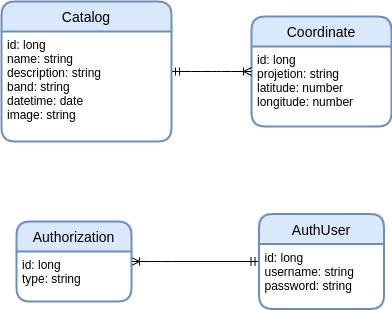

API Spring Boot RESTful¶
Projeto Integrador entre o sexto período da Faculdade de Tecnologia de São José dos Campos, Professor Jessen Vidal de Análise e Desenvolvimento de Sistemas e a empresa Visiona, para qual nos forneceu o problema da identificação de talhões em imagens de sensoriamento remoto.
Para o funcionamento da API Spring Boot com o catálogo de imagens, é necessário os seguintes requisitos:
- Uma instância do banco de dados PostgreSQL/PostGIS em execução e configurado;
- Um servidor de mapas Geoserver em execução e configurado;
Projeto¶
Este projeto consiste em:
- Desenvolvimento de uma API RESTful para o catálogo de imagens georreferenciados em um banco de dados PostGIS;
- Com dados multitemporais, utilizar-se de inteligência artificial para identificar talhões em uma área de interesse.
Ferramentas¶
-
CI
É necessário uma máquina virtual, esta servirá para o software Jenkins que executará os processos de Integração Contínua.
- Se a máquina for local, utilize o ngrok, um serviço gratuito de tunelamento sem configuração de firewall ou port forwarding.
Agora no Jenkins deve-se configurar a pipeline de testes nos seguintes passos:
- Clone: Para buscar o repositório com os novos dados;
- Environment: Instala as dependências do projeto;
- Testes: Execução dos Testes JUnit.
Configuar Webhook no GitHUB para o endpoint do Jenkins (URL do ngrok se foi utilizado) e ativar a opção: * GitHub hook trigger for GITScm polling
-
CD
a definir processo de deploy.
Instalação e execução da aplicação¶
Instalação para o ambiente de desenvolvimento¶
Obs.: Necessário instalação do gradle 5+.
$ gradle bootRun
Execução da aplicação em micro serviços¶
Obs.: Não esqueça de mudar o endereço IP (localhost) do banco de dados no arquivo application.properties para o endereço real do servidor PostgreSQL do seu computador.
## Gerar o arquivo executável `.jar` utilizando o Gradle 5
$ gradle build
## Construir a imagem docker com base no `Dockerfile`
$ docker build -t spring-restful .
## Executar o container localmente
$ docker run --name spring-api-restful -p 4040:8080 -d spring-restful
O banco de dados criado por essa aplicação possui o seguinte modelo de relações:

Após o comando
docker rundigite o seguintedocker pspara listar os serviços em execução pelo seu docker instalado, a resposta deve ser a seguinte:
$ docker ps
CONTAINER ID IMAGE COMMAND CREATED STATUS PORTS NAMES
a06cb1ccf107 spring-restful "java -jar /app.jar" 25 hours ago Up 25 hours 0.0.0.0:4040->8080/tcp spring-api-restful
Em seu navegador digite o seguinte link
localhost:8080/catalog/list.
Operações¶
Listagem: lista todas as imagens cadastradas no banco de dados PostgreSQL por método GET:
GET localhost:8080/catalog/list
Response:
[
{
"id": 1,
"name": "clip_20170612T083546_Sigma0_VH_db",
"description": "sentinel A image clip_Sigma0_VH_db.tif INPE",
"band": "VH",
"dateTime": "2017-06-12 08:35:46",
"coordinates": [
{
"id": 1,
"projection": "EPSG:4326",
"latitude": -12.042006714207925,
"longitude": -45.8734130859375,
"catalog": null
},
{
"id": 2,
"projection": "EPSG:4326",
"latitude": -12.224602049269444,
"longitude": -45.7415771484375,
"catalog": null
}
],
"image": "http://www.dpi.inpe.br/agricultural-database/lem/dados/cenas/Sentinel1/20170612_S1A/clip_20170612T083546_Sigma0_VH_db.tif"
}
]
Cadastro de imagens: cadastra uma imagem com os atributos definidos nos exemplos no banco de dados PostgreSQL, método POST:
POST localhost:8080/catalog/add
Body para a requisição:
{
"name": "clip_20170612T083546_Sigma0_VH_db",
"description": "sentinel A image clip_Sigma0_VH_db.tif INPE",
"band": "VH",
"dateTime": "2017-06-12 08:35:46",
"coordinates": [
{
"projection": "EPSG:4326",
"latitude": -12.042006714207925,
"longitude": -45.8734130859375
},
{
"projection": "EPSG:4326",
"latitude": -12.224602049269444,
"longitude": -45.7415771484375
}
],
"image": "http://www.dpi.inpe.br/agricultural-database/lem/dados/cenas/Sentinel1/20170612_S1A/clip_20170612T083546_Sigma0_VH_db.tif"
}
Busca de imagens: busca de imagens a partir de uma dado polígono formatado em GeoJSON, em concordãncia aos atributos definidos nos exemplos em projeção EPSG:4326 com banco de dados PostgreSQL, método POST:
POST localhost:8080/catalog/search
Body para a requisição:
{
"dateTime" : "2017-06-12 08:35:46",
"band" : "VV",
"geojson" : {
"type": "FeatureCollection",
"features": [
{
"type": "Feature",
"properties": {},
"geometry": {
"type": "Polygon",
"coordinates": [[
[
-47.3016357421875,
-11.248449735768247
],
...
]
]
}
}
]
}
}
Obs.: Você pode aprender mais sobre GeoJSON's com o geojson.io.